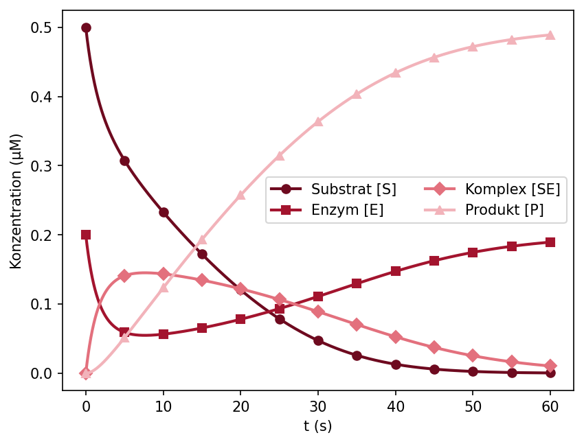
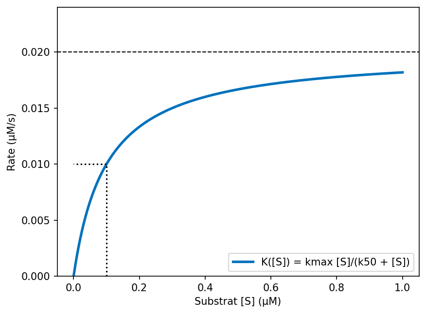
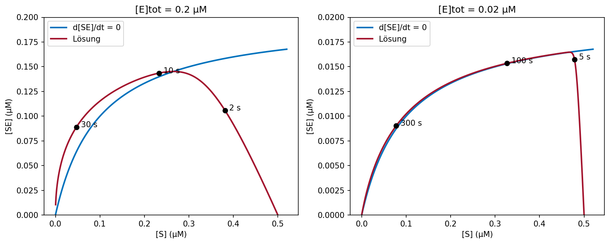
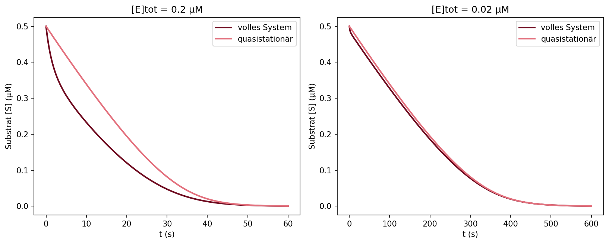

Kapitel 4 · Kontinuierliche dynamische Systeme mit mehreren Variablen
4.3Michaelis-Menten-Kinetik
Ein Enzym E bindet ein Substrat S zu einem Komplex SE, der in Produkt P und freies Enzym zerfällt. Das Massenwirkungsgesetz liefert ein System für vier Konzentrationen. Ist wenig Enzym vorhanden, stellt sich der Komplex schnell auf einen quasistationären Wert ein, und man erhält die Michaelis-Menten-Rate.
Zu jeder Abbildung des Abschnitts finden Sie das Programm, das sie erzeugt. Ändern Sie Parameter und Startwerte und beobachten Sie, was passiert. Abbildungs- und Gleichungsnummern beziehen sich auf das Buch.
Abb. 4.13
Das volle System
d[S]/dt = −k1 [S][E] + k2 [SE], d[SE]/dt = k1 [S][E] − (k2 + k3) [SE], …
Substrat wird zu Produkt umgesetzt, die Enzymmenge [E] + [SE] bleibt dabei erhalten.

# Abb. 4.13: Michaelis-Menten-System mit allen vier Konzentrationen (Buch, Abschnitt 4.3, Gl. 4.12)
# k1 = 1, k2 = 1e-4, k3 = 0.1, [S]0 = 0.5 µM, [E]0 = 0.2 µM, [SE]0 = [P]0 = 0
# (c) 2026 Philipp Kügler · Programm zum Buch „Dynamische Systeme in den Lebenswissenschaften“ · MIT-Lizenz (siehe LICENSE)
using Printf, Plots
using OrdinaryDiffEq # Paket OrdinaryDiffEq: using Pkg; Pkg.add("OrdinaryDiffEq")
# löst dz/dt = f(t, z) und gibt die Lösung zu den Zeitpunkten t zurück (Zeile i = Komponente i)
loese(f, z0, t; alg = Tsit5(), kw...) = Array(solve(ODEProblem((z, p, s) -> f(s, z), float.(z0), (t[1], t[end])), alg;
reltol = 1e-10, abstol = 1e-12, saveat = t, kw...))
R1 = RGB(0.43, 0.04, 0.12); R2 = RGB(0.64, 0.08, 0.18); R3 = RGB(0.89, 0.44, 0.49)
BL = RGB(0, 0.447, 0.741); HB = RGB(0.45, 0.70, 0.90); GR = RGB(0.2, 0.6, 0.25)
idx(t, tt) = findfirst(t .>= tt - 1e-9) # erster Index mit t >= tt
k1 = 1.0; k2 = 1e-4; k3 = 0.1 # Raten in 1/(µM s) bzw. 1/s
S0 = 0.5 # µM
k50 = (k2 + k3) / k1
function mm(t, z)
S, E, C, P = z # Substrat, Enzym, Komplex SE, Produkt
r1 = k1 * S * E; r2 = k2 * C; r3 = k3 * C
return [-r1 + r2, -r1 + r2 + r3, r1 - r2 - r3, r3]
end
E0 = 0.2
t = range(0, 60, length = 3001)
z = loese(mm, [S0, E0, 0, 0], t, abstol = 1e-13); S, E, C, P = eachrow(z)
println("Erhaltung [E] + [SE] = E0 bis auf Rundungsfehler (< 1e-12): ", maximum(abs.(E .+ C .- E0)) < 1e-12 ? "ja" : "nein")
for tt in (5, 20, 60)
i = idx(t, tt)
@printf("t = %2d s: [S] = %.4f, [E] = %.4f, [SE] = %.4f, [P] = %.4f\n", tt, S[i], E[i], C[i], P[i])
end
farben = [R1, R2, R3, RGB(0.95, 0.70, 0.73)]
p = plot(xlabel = "t (s)", ylabel = "Konzentration (µM)", legend_columns = 2)
for (y, name, fa, m) in zip([S, E, C, P], ["Substrat [S]", "Enzym [E]", "Komplex [SE]", "Produkt [P]"], farben, [:circle, :rect, :diamond, :utriangle])
plot!(p, t, y, color = fa, lw = 2, label = name)
scatter!(p, t[1:250:end], y[1:250:end], color = fa, marker = m, label = "")
end
display(p)% Abb. 4.13: Michaelis-Menten-System mit allen vier Konzentrationen (Buch, Abschnitt 4.3, Gl. 4.12)
% k1 = 1, k2 = 1e-4, k3 = 0.1, [S]0 = 0.5 µM, [E]0 = 0.2 µM, [SE]0 = [P]0 = 0
% (c) 2026 Philipp Kügler · Programm zum Buch „Dynamische Systeme in den Lebenswissenschaften“ · MIT-Lizenz (siehe LICENSE)
k1 = 1; k2 = 1e-4; k3 = 0.1; % Raten in 1/(µM s) bzw. 1/s
S0 = 0.5; % µM
k50 = (k2 + k3) / k1;
% z = ([S], [E], [SE], [P]): Substrat, Enzym, Komplex, Produkt
mm = @(t, z) [-k1 * z(1) * z(2) + k2 * z(3); -k1 * z(1) * z(2) + (k2 + k3) * z(3); k1 * z(1) * z(2) - (k2 + k3) * z(3); k3 * z(3)];
opt = odeset('RelTol', 1e-10, 'AbsTol', 1e-13);
E0 = 0.2;
[t, z] = ode45(mm, linspace(0, 60, 3001), [S0; E0; 0; 0], opt);
if max(abs(z(:, 2) + z(:, 3) - E0)) < 1e-12, ok = 'ja'; else, ok = 'nein'; end
fprintf('Erhaltung [E] + [SE] = E0 bis auf Rundungsfehler (< 1e-12): %s\n', ok);
for tt = [5 20 60]
i = find(t >= tt - 1e-9, 1);
fprintf('t = %2d s: [S] = %.4f, [E] = %.4f, [SE] = %.4f, [P] = %.4f\n', tt, z(i, :));
end
farben = [0.43 0.04 0.12; 0.64 0.08 0.18; 0.89 0.44 0.49; 0.95 0.70 0.73]; marker = 'osd^';
hold on
for j = 1:4
plot(t, z(:, j), 'Color', farben(j, :), 'LineWidth', 2);
plot(t(1:250:end), z(1:250:end, j), marker(j), 'Color', farben(j, :), 'MarkerFaceColor', farben(j, :), 'HandleVisibility', 'off');
end
hold off
xlabel('t (s)'); ylabel('Konzentration (µM)'); legend('Substrat [S]', 'Enzym [E]', 'Komplex [SE]', 'Produkt [P]');# Abb. 4.13: Michaelis-Menten-System mit allen vier Konzentrationen (Buch, Abschnitt 4.3, Gl. 4.12)
# k1 = 1, k2 = 1e-4, k3 = 0.1, [S]0 = 0.5 µM, [E]0 = 0.2 µM, [SE]0 = [P]0 = 0
# (c) 2026 Philipp Kügler · Programm zum Buch „Dynamische Systeme in den Lebenswissenschaften“ · MIT-Lizenz (siehe LICENSE)
import numpy as np
import matplotlib.pyplot as plt
from scipy.integrate import solve_ivp
k1, k2, k3 = 1.0, 1e-4, 0.1 # Raten in 1/(µM s) bzw. 1/s
S0 = 0.5 # µM
k50 = (k2 + k3) / k1
def mm(t, z):
S, E, C, P = z # Substrat, Enzym, Komplex SE, Produkt
r1, r2, r3 = k1 * S * E, k2 * C, k3 * C
return [-r1 + r2, -r1 + r2 + r3, r1 - r2 - r3, r3]
E0 = 0.2
t = np.linspace(0, 60, 3001)
s = solve_ivp(mm, [0, 60], [S0, E0, 0, 0], t_eval=t, method="LSODA", rtol=1e-10, atol=1e-13)
S, E, C, P = s.y
print("Erhaltung [E] + [SE] = E0 bis auf Rundungsfehler (< 1e-12):", "ja" if np.max(abs(E + C - E0)) < 1e-12 else "nein")
for tt in [5, 20, 60]:
i = np.searchsorted(t, tt)
print(f"t = {tt:2d} s: [S] = {S[i]:.4f}, [E] = {E[i]:.4f}, [SE] = {C[i]:.4f}, [P] = {P[i]:.4f}")
farben = [(0.43, 0.04, 0.12), (0.64, 0.08, 0.18), (0.89, 0.44, 0.49), (0.95, 0.70, 0.73)]
for y, name, fa, m in zip([S, E, C, P], ["Substrat [S]", "Enzym [E]", "Komplex [SE]", "Produkt [P]"], farben, "osD^"):
plt.plot(t, y, "-" + m, color=fa, lw=2, markevery=250, label=name)
plt.xlabel("t (s)"); plt.ylabel("Konzentration (µM)"); plt.legend(ncol=2)
plt.show()# Abb. 4.13: Michaelis-Menten-System mit allen vier Konzentrationen (Buch, Abschnitt 4.3, Gl. 4.12)
# k1 = 1, k2 = 1e-4, k3 = 0.1, [S]0 = 0.5 µM, [E]0 = 0.2 µM, [SE]0 = [P]0 = 0
# (c) 2026 Philipp Kügler · Programm zum Buch „Dynamische Systeme in den Lebenswissenschaften“ · MIT-Lizenz (siehe LICENSE)
library(deSolve) # Paket deSolve: install.packages("deSolve")
k1 <- 1; k2 <- 1e-4; k3 <- 0.1 # Raten in 1/(µM s) bzw. 1/s
S0 <- 0.5 # µM
k50 <- (k2 + k3) / k1
# z = ([S], [E], [SE], [P]): Substrat, Enzym, Komplex, Produkt
mm <- function(t, z) c(-k1 * z[1] * z[2] + k2 * z[3], -k1 * z[1] * z[2] + (k2 + k3) * z[3],
k1 * z[1] * z[2] - (k2 + k3) * z[3], k3 * z[3])
loese <- function(f, z0, t) ode(z0, t, function(t, z, p) list(f(t, z)), NULL, method = "lsoda", rtol = 1e-10, atol = 1e-14)
E0 <- 0.2
x <- loese(mm, c(S0, E0, 0, 0), seq(0, 60, length.out = 3001)) # Spalten: Zeit, [S], [E], [SE], [P]
cat("Erhaltung [E] + [SE] = E0 bis auf Rundungsfehler (< 1e-12):", if (max(abs(x[, 3] + x[, 4] - E0)) < 1e-12) "ja" else "nein", "\n")
for (tt in c(5, 20, 60)) {
i <- which(x[, 1] >= tt - 1e-9)[1]
cat(sprintf("t = %2d s: [S] = %.4f, [E] = %.4f, [SE] = %.4f, [P] = %.4f\n", tt, x[i, 2], x[i, 3], x[i, 4], x[i, 5]))
}
farben <- c(rgb(0.43, 0.04, 0.12), rgb(0.64, 0.08, 0.18), rgb(0.89, 0.44, 0.49), rgb(0.95, 0.70, 0.73)); zeichen <- c(16, 15, 18, 17)
plot(NULL, xlim = c(0, 60), ylim = c(0, 0.55), xlab = "t (s)", ylab = "Konzentration (µM)")
for (j in 1:4) {
lines(x[, 1], x[, j + 1], col = farben[j], lwd = 2)
idx <- seq(1, nrow(x), 250); points(x[idx, 1], x[idx, j + 1], pch = zeichen[j], col = farben[j])
}
legend("right", legend = c("Substrat [S]", "Enzym [E]", "Komplex [SE]", "Produkt [P]"), col = farben, pch = zeichen, lwd = 2)Ausgabe im Befehlsfenster
Erhaltung [E] + [SE] = E0 bis auf Rundungsfehler (< 1e-12): ja
t = 5 s: [S] = 0.3077, [E] = 0.0591, [SE] = 0.1409, [P] = 0.0514
t = 20 s: [S] = 0.1205, [E] = 0.0780, [SE] = 0.1220, [P] = 0.2576
t = 60 s: [S] = 0.0004, [E] = 0.1895, [SE] = 0.0105, [P] = 0.4891Abb. 4.14
Michaelis-Menten-Rate
K([S]) = kmax [S]/(k50 + [S])
Bei kleinem Substrat steigt die Rate linear, bei großem nähert sie sich kmax. Bei [S] = k50 ist die halbe Maximalrate erreicht.

# Abb. 4.14: Michaelis-Menten-Rate (Buch, Abschnitt 4.3, Gl. 4.14)
# K([S]) = kmax [S]/(k50 + [S]) mit kmax = k3 [E]tot = 0.02 µM/s und k50 = (k2 + k3)/k1 ≈ 0.1 µM
# (c) 2026 Philipp Kügler · Programm zum Buch „Dynamische Systeme in den Lebenswissenschaften“ · MIT-Lizenz (siehe LICENSE)
using Printf, Plots
R1 = RGB(0.43, 0.04, 0.12); R2 = RGB(0.64, 0.08, 0.18); R3 = RGB(0.89, 0.44, 0.49)
BL = RGB(0, 0.447, 0.741); HB = RGB(0.45, 0.70, 0.90); GR = RGB(0.2, 0.6, 0.25)
k1 = 1.0; k2 = 1e-4; k3 = 0.1; Etot = 0.2
kmax = k3 * Etot; k50 = (k2 + k3) / k1
@printf("kmax = %g µM/s, k50 = %.4f µM\n", kmax, k50)
S = range(0, 1, length = 400)
p = plot(S, kmax .* S ./ (k50 .+ S), color = BL, lw = 2.5, label = "K([S]) = kmax [S]/(k50 + [S])", ylims = (0, 0.024),
legend = :bottomright, xlabel = "Substrat [S] (µM)", ylabel = "Rate (µM/s)")
hline!(p, [kmax], color = :black, ls = :dash, label = "")
plot!(p, [k50, k50, 0], [0, kmax / 2, kmax / 2], color = :black, ls = :dot, label = "")
display(p)% Abb. 4.14: Michaelis-Menten-Rate (Buch, Abschnitt 4.3, Gl. 4.14)
% K([S]) = kmax [S]/(k50 + [S]) mit kmax = k3 [E]tot = 0.02 µM/s und k50 = (k2 + k3)/k1 ≈ 0.1 µM
% (c) 2026 Philipp Kügler · Programm zum Buch „Dynamische Systeme in den Lebenswissenschaften“ · MIT-Lizenz (siehe LICENSE)
k1 = 1; k2 = 1e-4; k3 = 0.1; Etot = 0.2;
kmax = k3 * Etot; k50 = (k2 + k3) / k1;
fprintf('kmax = %g µM/s, k50 = %.4f µM\n', kmax, k50);
S = linspace(0, 1, 400);
plot(S, kmax * S ./ (k50 + S), 'Color', [0 0.447 0.741], 'LineWidth', 2.5); hold on
plot([0 1], [kmax kmax], 'k--'); plot([k50 k50 0], [0 kmax / 2 kmax / 2], 'k:'); hold off
xlabel('Substrat [S] (µM)'); ylabel('Rate (µM/s)'); ylim([0 0.024]);
legend('K([S]) = k_{max} [S]/(k_{50} + [S])', 'Location', 'southeast');# Abb. 4.14: Michaelis-Menten-Rate (Buch, Abschnitt 4.3, Gl. 4.14)
# K([S]) = kmax [S]/(k50 + [S]) mit kmax = k3 [E]tot = 0.02 µM/s und k50 = (k2 + k3)/k1 ≈ 0.1 µM
# (c) 2026 Philipp Kügler · Programm zum Buch „Dynamische Systeme in den Lebenswissenschaften“ · MIT-Lizenz (siehe LICENSE)
import numpy as np
import matplotlib.pyplot as plt
k1, k2, k3, Etot = 1.0, 1e-4, 0.1, 0.2
kmax, k50 = k3 * Etot, (k2 + k3) / k1
print(f"kmax = {kmax:g} µM/s, k50 = {k50:.4f} µM")
S = np.linspace(0, 1, 400)
plt.plot(S, kmax * S / (k50 + S), color=(0, 0.447, 0.741), lw=2.5, label="K([S]) = kmax [S]/(k50 + [S])")
plt.axhline(kmax, color="k", ls="--", lw=1)
plt.plot([k50, k50, 0], [0, kmax / 2, kmax / 2], "k:")
plt.xlabel("Substrat [S] (µM)"); plt.ylabel("Rate (µM/s)"); plt.ylim(0, 0.024); plt.legend(loc="lower right")
plt.show()# Abb. 4.14: Michaelis-Menten-Rate (Buch, Abschnitt 4.3, Gl. 4.14)
# K([S]) = kmax [S]/(k50 + [S]) mit kmax = k3 [E]tot = 0.02 µM/s und k50 = (k2 + k3)/k1 ≈ 0.1 µM
# (c) 2026 Philipp Kügler · Programm zum Buch „Dynamische Systeme in den Lebenswissenschaften“ · MIT-Lizenz (siehe LICENSE)
k1 <- 1; k2 <- 1e-4; k3 <- 0.1; Etot <- 0.2
kmax <- k3 * Etot; k50 <- (k2 + k3) / k1
cat(sprintf("kmax = %g µM/s, k50 = %.4f µM\n", kmax, k50))
S <- seq(0, 1, length.out = 400)
plot(S, kmax * S / (k50 + S), type = "l", col = rgb(0, 0.447, 0.741), lwd = 2.5, ylim = c(0, 0.024), xlab = "Substrat [S] (µM)", ylab = "Rate (µM/s)")
abline(h = kmax, lty = 2); lines(c(k50, k50, 0), c(0, kmax / 2, kmax / 2), lty = 3)
legend("bottomright", legend = "K([S]) = kmax [S]/(k50 + [S])", col = rgb(0, 0.447, 0.741), lwd = 2.5)Ausgabe im Befehlsfenster
kmax = 0.02 µM/s, k50 = 0.1001 µMAbb. 4.15
Die ([S], [SE])-Ebene
d[SE]/dt = 0: [SE] = [E]tot [S]/([S] + k50)
Die Lösung erreicht rasch die Kurve, auf der d[SE]/dt = 0 ist, und läuft dann an ihr entlang. Mit weniger Enzym (rechts) geschieht das relativ zur Umsatzzeit noch schneller.

# Abb. 4.15: Michaelis-Menten-System in der ([S], [SE])-Ebene (Buch, Abschnitt 4.3, Gl. 4.13)
# Lösung mit Zeitmarken und die Kurve d[SE]/dt = 0, also [SE] = [E]tot [S]/([S] + k50); links [E]tot = 0.2 µM, rechts 0.02 µM
# (c) 2026 Philipp Kügler · Programm zum Buch „Dynamische Systeme in den Lebenswissenschaften“ · MIT-Lizenz (siehe LICENSE)
using Printf, Plots
using OrdinaryDiffEq # Paket OrdinaryDiffEq: using Pkg; Pkg.add("OrdinaryDiffEq")
# löst dz/dt = f(t, z) und gibt die Lösung zu den Zeitpunkten t zurück (Zeile i = Komponente i)
loese(f, z0, t; alg = Tsit5(), kw...) = Array(solve(ODEProblem((z, p, s) -> f(s, z), float.(z0), (t[1], t[end])), alg;
reltol = 1e-10, abstol = 1e-12, saveat = t, kw...))
R1 = RGB(0.43, 0.04, 0.12); R2 = RGB(0.64, 0.08, 0.18); R3 = RGB(0.89, 0.44, 0.49)
BL = RGB(0, 0.447, 0.741); HB = RGB(0.45, 0.70, 0.90); GR = RGB(0.2, 0.6, 0.25)
idx(t, tt) = findfirst(t .>= tt - 1e-9) # erster Index mit t >= tt
k1 = 1.0; k2 = 1e-4; k3 = 0.1 # Raten in 1/(µM s) bzw. 1/s
S0 = 0.5 # µM
k50 = (k2 + k3) / k1
function mm(t, z)
S, E, C, P = z # Substrat, Enzym, Komplex SE, Produkt
r1 = k1 * S * E; r2 = k2 * C; r3 = k3 * C
return [-r1 + r2, -r1 + r2 + r3, r1 - r2 - r3, r3]
end
bilder = []
for (E0, T, marken) in [(0.2, 60, [2, 10, 30]), (0.02, 600, [5, 100, 300])]
t = range(0, T, length = 4001)
z = loese(mm, [S0, E0, 0, 0], t, abstol = 1e-14); S = z[1, :]; C = z[3, :]
Sg = range(0, 0.52, length = 300)
p = plot(Sg, E0 .* Sg ./ (Sg .+ k50), color = BL, lw = 2, label = "d[SE]/dt = 0", ylims = (0, E0), legend = :topleft,
title = @sprintf("[E]tot = %g µM", E0), xlabel = "[S] (µM)", ylabel = "[SE] (µM)")
plot!(p, S, C, color = R2, lw = 2, label = "Lösung")
for tm in marken
i = idx(t, tm)
scatter!(p, [S[i]], [C[i]], color = :black, label = ""); annotate!(p, S[i] + 0.01, C[i], text("$tm s", 9, :left))
@printf("[E]tot = %g: t = %3d s: [S] = %.4f, [SE] = %.5f\n", E0, tm, S[i], C[i])
end
push!(bilder, p)
end
display(plot(bilder..., layout = (1, 2), size = (900, 420)))% Abb. 4.15: Michaelis-Menten-System in der ([S], [SE])-Ebene (Buch, Abschnitt 4.3, Gl. 4.13)
% Lösung mit Zeitmarken und die Kurve d[SE]/dt = 0, also [SE] = [E]tot [S]/([S] + k50); links [E]tot = 0.2 µM, rechts 0.02 µM
% (c) 2026 Philipp Kügler · Programm zum Buch „Dynamische Systeme in den Lebenswissenschaften“ · MIT-Lizenz (siehe LICENSE)
k1 = 1; k2 = 1e-4; k3 = 0.1; % Raten in 1/(µM s) bzw. 1/s
S0 = 0.5; % µM
k50 = (k2 + k3) / k1;
% z = ([S], [E], [SE], [P]): Substrat, Enzym, Komplex, Produkt
mm = @(t, z) [-k1 * z(1) * z(2) + k2 * z(3); -k1 * z(1) * z(2) + (k2 + k3) * z(3); k1 * z(1) * z(2) - (k2 + k3) * z(3); k3 * z(3)];
opt = odeset('RelTol', 1e-10, 'AbsTol', 1e-13);
opt = odeset('RelTol', 1e-10, 'AbsTol', 1e-14);
E0s = [0.2 0.02]; Ts = [60 600]; marken = [2 10 30; 5 100 300];
for j = 1:2
E0 = E0s(j);
[t, z] = ode45(mm, linspace(0, Ts(j), 4001), [S0; E0; 0; 0], opt);
S = z(:, 1); C = z(:, 3);
subplot(1, 2, j);
Sg = linspace(0, 0.52, 300);
plot(Sg, E0 * Sg ./ (Sg + k50), 'Color', [0 0.447 0.741], 'LineWidth', 2); hold on
plot(S, C, 'Color', [0.64 0.08 0.18], 'LineWidth', 2);
for tm = marken(j, :)
i = find(t >= tm - 1e-9, 1);
plot(S(i), C(i), 'ko', 'MarkerFaceColor', 'k'); text(S(i) + 0.01, C(i), sprintf('%d s', tm));
fprintf('[E]tot = %g: t = %3d s: [S] = %.4f, [SE] = %.5f\n', E0, tm, S(i), C(i));
end
hold off
xlabel('[S] (µM)'); ylabel('[SE] (µM)'); ylim([0 E0]); title(sprintf('[E]tot = %g µM', E0));
legend('d[SE]/dt = 0', 'Lösung', 'Location', 'northwest');
end# Abb. 4.15: Michaelis-Menten-System in der ([S], [SE])-Ebene (Buch, Abschnitt 4.3, Gl. 4.13)
# Lösung mit Zeitmarken und die Kurve d[SE]/dt = 0, also [SE] = [E]tot [S]/([S] + k50); links [E]tot = 0.2 µM, rechts 0.02 µM
# (c) 2026 Philipp Kügler · Programm zum Buch „Dynamische Systeme in den Lebenswissenschaften“ · MIT-Lizenz (siehe LICENSE)
import numpy as np
import matplotlib.pyplot as plt
from scipy.integrate import solve_ivp
k1, k2, k3 = 1.0, 1e-4, 0.1 # Raten in 1/(µM s) bzw. 1/s
S0 = 0.5 # µM
k50 = (k2 + k3) / k1
def mm(t, z):
S, E, C, P = z # Substrat, Enzym, Komplex SE, Produkt
r1, r2, r3 = k1 * S * E, k2 * C, k3 * C
return [-r1 + r2, -r1 + r2 + r3, r1 - r2 - r3, r3]
fig, axs = plt.subplots(1, 2, figsize=(11, 4.5))
for ax, E0, T, marken in [(axs[0], 0.2, 60, [2, 10, 30]), (axs[1], 0.02, 600, [5, 100, 300])]:
t = np.linspace(0, T, 4001)
s = solve_ivp(mm, [0, T], [S0, E0, 0, 0], t_eval=t, method="LSODA", rtol=1e-10, atol=1e-14)
S, C = s.y[0], s.y[2]
Sg = np.linspace(0, 0.52, 300)
ax.plot(Sg, E0 * Sg / (Sg + k50), color=(0, 0.447, 0.741), lw=2, label="d[SE]/dt = 0")
ax.plot(S, C, color=(0.64, 0.08, 0.18), lw=2, label="Lösung")
for tm in marken:
i = np.searchsorted(t, tm)
ax.plot(S[i], C[i], "ko"); ax.text(S[i] + 0.01, C[i], f"{tm} s")
print(f"[E]tot = {E0:g}: t = {tm:3d} s: [S] = {S[i]:.4f}, [SE] = {C[i]:.5f}")
ax.set_xlabel("[S] (µM)"); ax.set_ylabel("[SE] (µM)"); ax.set_ylim(0, E0); ax.set_title(f"[E]tot = {E0:g} µM"); ax.legend(loc="upper left")
plt.tight_layout()
plt.show()# Abb. 4.15: Michaelis-Menten-System in der ([S], [SE])-Ebene (Buch, Abschnitt 4.3, Gl. 4.13)
# Lösung mit Zeitmarken und die Kurve d[SE]/dt = 0, also [SE] = [E]tot [S]/([S] + k50); links [E]tot = 0.2 µM, rechts 0.02 µM
# (c) 2026 Philipp Kügler · Programm zum Buch „Dynamische Systeme in den Lebenswissenschaften“ · MIT-Lizenz (siehe LICENSE)
library(deSolve) # Paket deSolve: install.packages("deSolve")
k1 <- 1; k2 <- 1e-4; k3 <- 0.1 # Raten in 1/(µM s) bzw. 1/s
S0 <- 0.5 # µM
k50 <- (k2 + k3) / k1
# z = ([S], [E], [SE], [P]): Substrat, Enzym, Komplex, Produkt
mm <- function(t, z) c(-k1 * z[1] * z[2] + k2 * z[3], -k1 * z[1] * z[2] + (k2 + k3) * z[3],
k1 * z[1] * z[2] - (k2 + k3) * z[3], k3 * z[3])
loese <- function(f, z0, t) ode(z0, t, function(t, z, p) list(f(t, z)), NULL, method = "lsoda", rtol = 1e-10, atol = 1e-14)
par(mfrow = c(1, 2))
for (fall in list(list(0.2, 60, c(2, 10, 30)), list(0.02, 600, c(5, 100, 300)))) {
E0 <- fall[[1]]; T <- fall[[2]]
x <- loese(mm, c(S0, E0, 0, 0), seq(0, T, length.out = 4001))
Sg <- seq(0, 0.52, length.out = 300)
plot(Sg, E0 * Sg / (Sg + k50), type = "l", col = rgb(0, 0.447, 0.741), lwd = 2, ylim = c(0, E0),
xlab = "[S] (µM)", ylab = "[SE] (µM)", main = sprintf("[E]tot = %g µM", E0))
lines(x[, 2], x[, 4], col = rgb(0.64, 0.08, 0.18), lwd = 2)
for (tm in fall[[3]]) {
i <- which(x[, 1] >= tm - 1e-9)[1]
points(x[i, 2], x[i, 4], pch = 16); text(x[i, 2] + 0.01, x[i, 4], sprintf("%d s", tm), adj = 0)
cat(sprintf("[E]tot = %g: t = %3d s: [S] = %.4f, [SE] = %.5f\n", E0, tm, x[i, 2], x[i, 4]))
}
legend("topleft", legend = c("d[SE]/dt = 0", "Lösung"), col = c(rgb(0, 0.447, 0.741), rgb(0.64, 0.08, 0.18)), lwd = 2)
}Ausgabe im Befehlsfenster
[E]tot = 0.2: t = 2 s: [S] = 0.3810, [SE] = 0.10593
[E]tot = 0.2: t = 10 s: [S] = 0.2328, [SE] = 0.14355
[E]tot = 0.2: t = 30 s: [S] = 0.0472, [SE] = 0.08900
[E]tot = 0.02: t = 5 s: [S] = 0.4785, [SE] = 0.01573
[E]tot = 0.02: t = 100 s: [S] = 0.3270, [SE] = 0.01535
[E]tot = 0.02: t = 300 s: [S] = 0.0775, [SE] = 0.00902Abb. 4.16
Volles System und quasistationäre Näherung
d[S]/dt = −kmax [S]/(k50 + [S])
Mit [E]tot = 0.02 µM stimmt die Näherung viel besser als mit 0.2 µM; die Ausgabe nennt die größte Abweichung.

# Abb. 4.16: volles System und quasistationäre Näherung (Buch, Abschnitt 4.3, Gl. 4.12 und 4.14)
# d[S]/dt = -kmax [S]/(k50 + [S]) mit kmax = k3 [E]tot; links [E]tot = 0.2 µM, rechts 0.02 µM
# (c) 2026 Philipp Kügler · Programm zum Buch „Dynamische Systeme in den Lebenswissenschaften“ · MIT-Lizenz (siehe LICENSE)
using Printf, Plots
using OrdinaryDiffEq # Paket OrdinaryDiffEq: using Pkg; Pkg.add("OrdinaryDiffEq")
# löst dz/dt = f(t, z) und gibt die Lösung zu den Zeitpunkten t zurück (Zeile i = Komponente i)
loese(f, z0, t; alg = Tsit5(), kw...) = Array(solve(ODEProblem((z, p, s) -> f(s, z), float.(z0), (t[1], t[end])), alg;
reltol = 1e-10, abstol = 1e-12, saveat = t, kw...))
R1 = RGB(0.43, 0.04, 0.12); R2 = RGB(0.64, 0.08, 0.18); R3 = RGB(0.89, 0.44, 0.49)
BL = RGB(0, 0.447, 0.741); HB = RGB(0.45, 0.70, 0.90); GR = RGB(0.2, 0.6, 0.25)
k1 = 1.0; k2 = 1e-4; k3 = 0.1 # Raten in 1/(µM s) bzw. 1/s
S0 = 0.5 # µM
k50 = (k2 + k3) / k1
function mm(t, z)
S, E, C, P = z # Substrat, Enzym, Komplex SE, Produkt
r1 = k1 * S * E; r2 = k2 * C; r3 = k3 * C
return [-r1 + r2, -r1 + r2 + r3, r1 - r2 - r3, r3]
end
bilder = []
for (E0, T) in [(0.2, 60), (0.02, 600)]
t = range(0, T, length = 4001)
voll = loese(mm, [S0, E0, 0, 0], t, abstol = 1e-14)[1, :]
kmax = k3 * E0
qss = loese((t, S) -> [-kmax * S[1] / (k50 + S[1])], [S0], t, abstol = 1e-13)[1, :]
@printf("[E]tot = %g: größte Abweichung %.4f µM\n", E0, maximum(abs.(voll .- qss)))
p = plot(t, voll, color = R1, lw = 2, label = "volles System", title = @sprintf("[E]tot = %g µM", E0),
xlabel = "t (s)", ylabel = "Substrat [S] (µM)")
plot!(p, t, qss, color = R3, lw = 2, label = "quasistationär")
push!(bilder, p)
end
display(plot(bilder..., layout = (1, 2), size = (900, 420)))% Abb. 4.16: volles System und quasistationäre Näherung (Buch, Abschnitt 4.3, Gl. 4.12 und 4.14)
% d[S]/dt = -kmax [S]/(k50 + [S]) mit kmax = k3 [E]tot; links [E]tot = 0.2 µM, rechts 0.02 µM
% (c) 2026 Philipp Kügler · Programm zum Buch „Dynamische Systeme in den Lebenswissenschaften“ · MIT-Lizenz (siehe LICENSE)
k1 = 1; k2 = 1e-4; k3 = 0.1; % Raten in 1/(µM s) bzw. 1/s
S0 = 0.5; % µM
k50 = (k2 + k3) / k1;
% z = ([S], [E], [SE], [P]): Substrat, Enzym, Komplex, Produkt
mm = @(t, z) [-k1 * z(1) * z(2) + k2 * z(3); -k1 * z(1) * z(2) + (k2 + k3) * z(3); k1 * z(1) * z(2) - (k2 + k3) * z(3); k3 * z(3)];
opt = odeset('RelTol', 1e-10, 'AbsTol', 1e-13);
opt = odeset('RelTol', 1e-10, 'AbsTol', 1e-14);
E0s = [0.2 0.02]; Ts = [60 600];
for j = 1:2
E0 = E0s(j); T = Ts(j);
[t, z] = ode45(mm, linspace(0, T, 4001), [S0; E0; 0; 0], opt);
kmax = k3 * E0;
[t, q] = ode45(@(t, S) -kmax * S / (k50 + S), t, S0, odeset('RelTol', 1e-10, 'AbsTol', 1e-13));
fprintf('[E]tot = %g: größte Abweichung %.4f µM\n', E0, max(abs(z(:, 1) - q)));
subplot(1, 2, j);
plot(t, z(:, 1), 'Color', [0.43 0.04 0.12], 'LineWidth', 2); hold on
plot(t, q, 'Color', [0.89 0.44 0.49], 'LineWidth', 2); hold off
xlabel('t (s)'); ylabel('Substrat [S] (µM)'); title(sprintf('[E]tot = %g µM', E0)); legend('volles System', 'quasistationär');
end# Abb. 4.16: volles System und quasistationäre Näherung (Buch, Abschnitt 4.3, Gl. 4.12 und 4.14)
# d[S]/dt = -kmax [S]/(k50 + [S]) mit kmax = k3 [E]tot; links [E]tot = 0.2 µM, rechts 0.02 µM
# (c) 2026 Philipp Kügler · Programm zum Buch „Dynamische Systeme in den Lebenswissenschaften“ · MIT-Lizenz (siehe LICENSE)
import numpy as np
import matplotlib.pyplot as plt
from scipy.integrate import solve_ivp
k1, k2, k3 = 1.0, 1e-4, 0.1 # Raten in 1/(µM s) bzw. 1/s
S0 = 0.5 # µM
k50 = (k2 + k3) / k1
def mm(t, z):
S, E, C, P = z # Substrat, Enzym, Komplex SE, Produkt
r1, r2, r3 = k1 * S * E, k2 * C, k3 * C
return [-r1 + r2, -r1 + r2 + r3, r1 - r2 - r3, r3]
fig, axs = plt.subplots(1, 2, figsize=(11, 4.5))
for ax, E0, T in [(axs[0], 0.2, 60), (axs[1], 0.02, 600)]:
t = np.linspace(0, T, 4001)
voll = solve_ivp(mm, [0, T], [S0, E0, 0, 0], t_eval=t, method="LSODA", rtol=1e-10, atol=1e-14).y[0]
kmax = k3 * E0
qss = solve_ivp(lambda t, S: -kmax * S / (k50 + S), [0, T], [S0], t_eval=t, rtol=1e-10, atol=1e-13).y[0]
print(f"[E]tot = {E0:g}: größte Abweichung {np.max(abs(voll - qss)):.4f} µM")
ax.plot(t, voll, color=(0.43, 0.04, 0.12), lw=2, label="volles System")
ax.plot(t, qss, color=(0.89, 0.44, 0.49), lw=2, label="quasistationär")
ax.set_xlabel("t (s)"); ax.set_ylabel("Substrat [S] (µM)"); ax.set_title(f"[E]tot = {E0:g} µM"); ax.legend()
plt.tight_layout()
plt.show()# Abb. 4.16: volles System und quasistationäre Näherung (Buch, Abschnitt 4.3, Gl. 4.12 und 4.14)
# d[S]/dt = -kmax [S]/(k50 + [S]) mit kmax = k3 [E]tot; links [E]tot = 0.2 µM, rechts 0.02 µM
# (c) 2026 Philipp Kügler · Programm zum Buch „Dynamische Systeme in den Lebenswissenschaften“ · MIT-Lizenz (siehe LICENSE)
library(deSolve) # Paket deSolve: install.packages("deSolve")
k1 <- 1; k2 <- 1e-4; k3 <- 0.1 # Raten in 1/(µM s) bzw. 1/s
S0 <- 0.5 # µM
k50 <- (k2 + k3) / k1
# z = ([S], [E], [SE], [P]): Substrat, Enzym, Komplex, Produkt
mm <- function(t, z) c(-k1 * z[1] * z[2] + k2 * z[3], -k1 * z[1] * z[2] + (k2 + k3) * z[3],
k1 * z[1] * z[2] - (k2 + k3) * z[3], k3 * z[3])
loese <- function(f, z0, t) ode(z0, t, function(t, z, p) list(f(t, z)), NULL, method = "lsoda", rtol = 1e-10, atol = 1e-14)
par(mfrow = c(1, 2))
for (fall in list(c(0.2, 60), c(0.02, 600))) {
E0 <- fall[1]; T <- fall[2]
t <- seq(0, T, length.out = 4001)
voll <- loese(mm, c(S0, E0, 0, 0), t)[, 2]
kmax <- k3 * E0
qss <- ode(S0, t, function(t, S, p) list(-kmax * S / (k50 + S)), NULL, method = "lsoda", rtol = 1e-10, atol = 1e-13)[, 2]
cat(sprintf("[E]tot = %g: größte Abweichung %.4f µM\n", E0, max(abs(voll - qss))))
plot(t, voll, type = "l", col = rgb(0.43, 0.04, 0.12), lwd = 2, ylim = c(0, 0.5), xlab = "t (s)", ylab = "Substrat [S] (µM)",
main = sprintf("[E]tot = %g µM", E0))
lines(t, qss, col = rgb(0.89, 0.44, 0.49), lwd = 2)
legend("topright", legend = c("volles System", "quasistationär"), col = c(rgb(0.43, 0.04, 0.12), rgb(0.89, 0.44, 0.49)), lwd = 2)
}Ausgabe im Befehlsfenster
[E]tot = 0.2: größte Abweichung 0.1114 µM
[E]tot = 0.02: größte Abweichung 0.0136 µMMATLAB-Apps aus der Vorlesung
Herunterladen, in einen Ordner legen und in MATLAB den Namen ohne Endung eingeben, z. B. michaelis_menten_app. Die Apps nutzen die grafische Oberfläche von MATLAB und laufen nicht in GNU Octave.
- michaelis_menten_app.mEnzymkinetik: volles System und quasistationäre Näherung